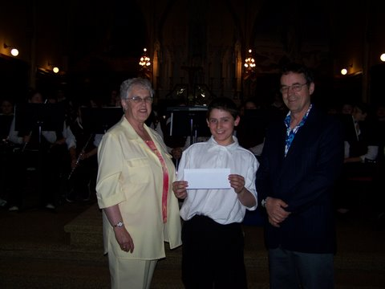

Souris Fund

Margaret Ching presents a cheque from the Community Foundation of Prince Edward Island in support of Souris Regional High School Band. Accepting the cheque on behalf of the band is Dimitri Boertien while the Director, Doug Millington, looks on.
The first grant from the Souris Fund was awarded recently for the purchase of band instruments at the Souris Regional High School. A cheque for $500 was presented by Margaret Ching, a Director of the Foundation from Souris. The Souris Fund is an open fund, was established by an anonymous donor from the Souris area, accepts additional donations and donors receive receipts acceptable when filing income returns. Grants from the Fund are made for charitable purposes in the Souris area.
A local committee has been established to expand the Souris Fund. Persons interested in helping or contributing should contact JoAnn Chisholm, a current Director, at 687-3766 or Margaret Ching, a Past Director, at 357-2818.
Island Shrine Club
On hand for the signing of an agreement between the Island Shrine Club and CFPEI were, from the left, Bruce Lewis, Director of CFPEI; Errol Monkley, Shrine Club Treasurer; and Norman Carruthers, President of CFPEI. Absent from the photo is Shrine Club President, James Walker
The Island Shrine Club signed an agreement with the Community Foundation of Prince Edward Island for the establishment of a Managed Fund. The initial contribution to the Fund was $7,500, however, the agreement allows for additional contributions. Withdrawals by the club may be made from time to time to carry out special projects.
CFPEI offers trustees an inexpensive alternative to administering charitable trusts. If interested, please contact any Director or the Foundation office at 892-3440 for information or to discuss your unique needs.
_______________________________________
The Community Foundation News is an informal newsletter, in electronic form only, edited and published by, and at the whim of, Don Glendenning. Think of it as a letter from a friend. Forward this to others who may be interested. For further information, check our website, www.cfpei.ca or Email me at: don@glendenning.net